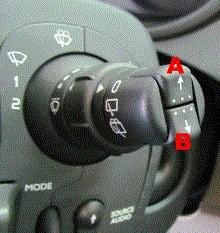

Resetting service message
This function is used to manually turn off the service indicator.
Procedure:
Turn on the ignition.
Press repeatedly on button A or B.
Select "Oil changes".
Hold in button A for approx. 10 seconds until "Remaining driving distance to next service" is shown on the display.
Let up button A.
Turn off the ignition.
